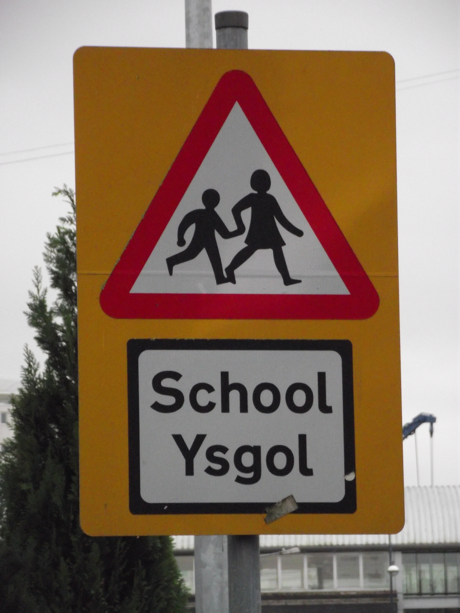

Pwrpas y prosiect yw pennu maint yr amrywiaeth yng nghystrawen y Gymraeg heddiw, gan gynnwys amrywiaeth yn ôl oedran a chefndir ieithyddol, ynghyd ag amrywiaeth daearyddol. Ei nodau penodol yw:
- pennu dosbarthiad amrywiadau cystrawennol y Gymraeg drwy ddefnyddio methodoleg systematig
- pennu patrymau newid drwy astudio amrywiaeth yn ôl oedran
- archwilio effeithiau adfywiad y Gymraeg ar gystrawen yr iaith
- darparu deunydd ar gyfer dadansoddiadau pellach o gystrawen y Gymraeg mewn unrhyw fframwaith
- darparu storfa o ddeunydd fydd ar gael i ymchwilwyr, y cyhoedd a phawb sydd â diddordeb mewn unrhyw agwedd ar amrywiaeth yn yr iaith Gymraeg fel y'i siaredir heddiw
Noddwyd prosiect un flwyddyn i gasglu data gan yr Academi Brydeinig.
Mae SAWD yn rhan o rwydweithiau prosiectau cystrawen tafodieithol Edisyn a REEDS.
Newyddion a gwybodaeth
- Cyfryngau
- Welsh Twitter: Capturing language change in real time
- Milton Keynes to Cardiff (via New Zealand)
- Berfau moddol a chytgord negyddol
- Y rhagenw ail unigol chdi
- Hepgor berfau cynorthwyol
Papurau â chysylltiad i'r prosiect